Raspberry mark The streak grid, packed into fruit.
Eighteen drupelets, which is the number of cells the streak mark fills, so the fruit and the calendar are the same object. Raspberry is #C2255C. Every caption repeats the mark at 24px.
01 BerryEighteen drupelets, the same count the streak mark fills. No decoration.
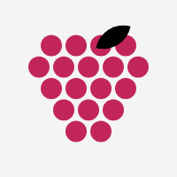
02 Berry, one leafOne ink leaf. Reads as fruit a second faster, costs a part at small sizes.
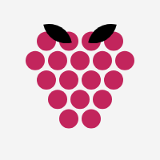
03 Berry, two leavesA hull rather than a leaf. More botanical, less mark.
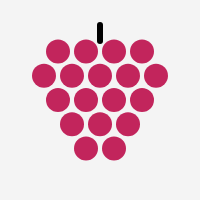
04 Berry, stemA 6px ink stem instead of a leaf. Survives the favicon that a leaf does not.
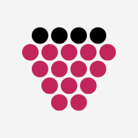
05 Ink hullThe top row is the hull, in ink. One shape, two materials, no extra parts.
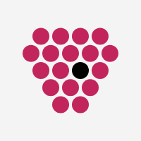
06 Today, inkThe whole fruit is the accent, so today has to be ink. Inverts the usual rule.07 Fruit fillsPosted days are drupelets, the rest are outlines. The berry completes as the month does.
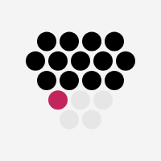
08 Calendar, berry shapedInk for posted, raspberry for today, hairline ahead. The old logic in the new silhouette.09 Unpacked rowsRows sit square instead of interlocking. More calendar, less fruit.
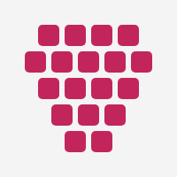
10 Cells, not dotsDrupelets as board cards. The mark comes from the product rather than the fruit.11 TaperedDrupelets shrink toward the point. Rounder, and it stops being a grid.12 Tight packingAlmost touching. Reads as one object before it reads as cells.13 Loose packingAir between the drupelets. Keeps the calendar reading, weakens the fruit.14 Six drupeletsFewest parts, biggest cells. The version that still works at 16px.15 Round berryWidest in the middle, not at the top. Closer to a blackberry than a raspberry.16 Deep raspberryThe darker plum at #A61E4D. Heavier, and the type next to it can stay black.
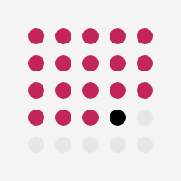
17 Grid, berry colouredThe mark you picked, recoloured. Square, and no fruit at all.18 Grid, corners offA 5 by 5 with the four corners dropped. The calendar rounding into a berry.
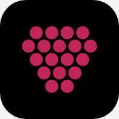
19 Dark tileApp icon. Raspberry on ink is the strongest pairing in the set.
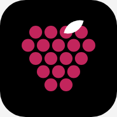
20 Dark tile, leafThe leaf in white so it reads against the tile.
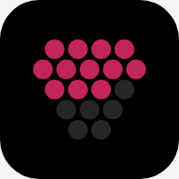
21 Dark tile, fillingPosted days bright, the rest a tint of the tile. Cadence visible in the icon.22 Raspberry tileGround and figure swapped. The loudest thing here, and the best avatar.23 Raspberry discFor the round crop LinkedIn and X both apply anyway.
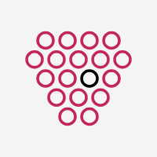
24 OutlineEvery drupelet hollow. Lightest on the page, first to disappear at small sizes.